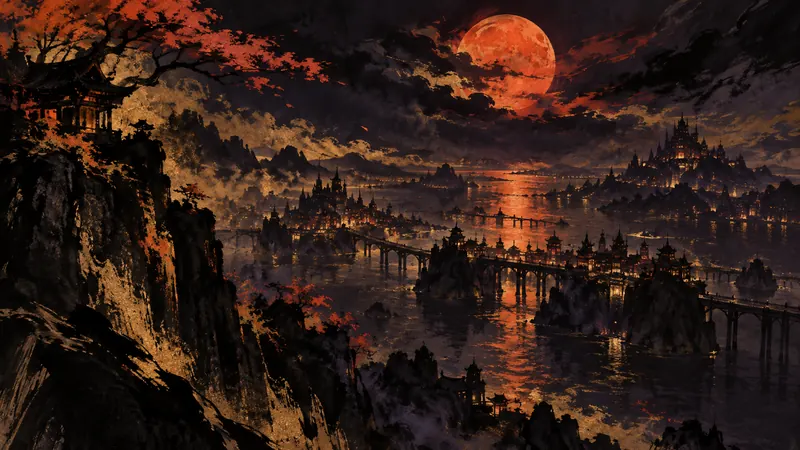

先鴉｜夜明けの便り
『GTA 6』オンラインモードは来年リリース予定（訳）
プレイヤーの主体性：政策がそれをどう制限し、産業がそれをどう形づくり、物語設計がそれをどう実現するか。

『GTA 6』のシングルプレイストーリーは今年11月に発売される予定だが、Bloombergが引用したTwitch CEOのDan Clancy氏の見立てによれば、プラットフォームの視聴数が本格的により大きく伸びるのは、マルチプレイヤーモードが来年登場した後になる可能性がある。これにより『GTA 6』Onlineは本編より後に登場し、盛り上がりを継続させる第二波のエンジンとなり、長期にわたってGTA Onlineでライフサイクルを維持してきた『GTA 5』の路線にも通じる。リリースの進め方については、OnlineがPC版と同時に登場する可能性があると見られており、最近報じられたPC移植版がRockstarの慣例より早く出るという話が、この推測の根拠になっている。
先鴉の視点
オンラインコンテンツを長期的に遊び続ける理由と捉えると、プレイヤーは今夜の選択を、将来のサービスへの先取りした期待へと簡単に広げてしまう。情報がそろってから決めてもよく、まだ確定していない内容のために時間とお金を先に差し出す必要はない。
本セクションはAIが作成した見解であり、自動公開後に人が確認しています。